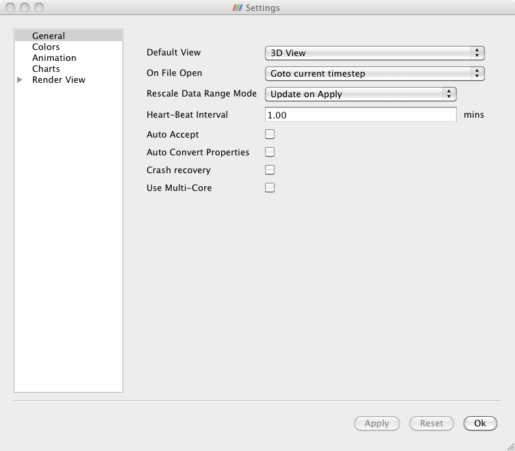
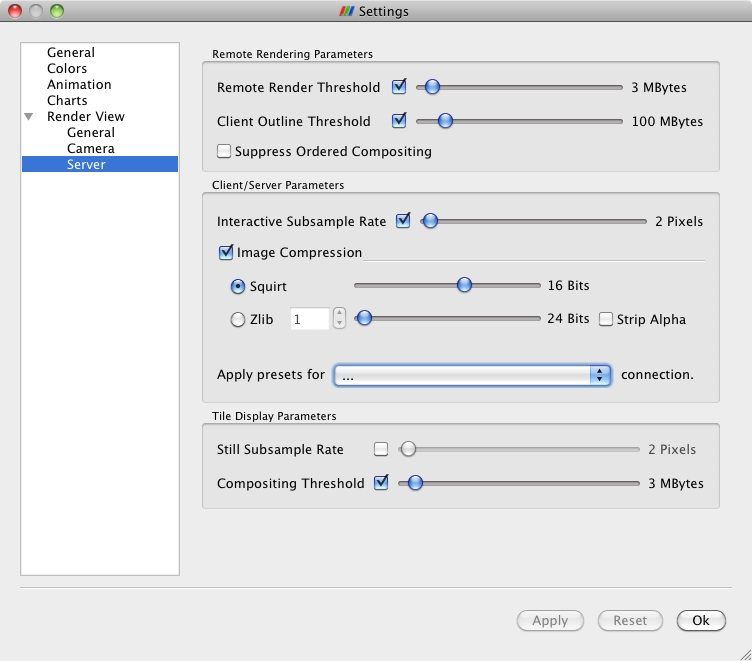

Application Settings
Application Settings
Application wide settings are saved in between sessions so that every time you start ParaView on the same machine you get the same behaviors. The settings are stored in an XML file that resides at %APPDATA%\ParaView\ParaViewVERSION.ini on Windows and ~/.config/ParaView/ParaViewVERSION.ini on all other platforms. If you need to restore ParaView's default settings you can either move this file or run with the --disable-registry argument.
These settings are managed via the settings dialog. On Macintosh this is reached from the Preferences entry in the ParaView menu. On Unix, Linux and Windows systems it is reached from the Settings entry on the Edit menu. These settings are program wide and are not to be confused with the View settings found under the Edit menu. Those settings are specific to each View window and are discussed in the Displaying Data chapter.
The following figures show the various pages within the settings dialog. Choose from among them by clicking on the page list toward the left. Click on the arrow to expose the three sub pages in the Render View settings category. Some plugins add their own pages to the dialog but we do not discuss them here and instead refer you to any documentation that comes along with the plugin. Do note though that most settings are documented within the application via tool tips.
General

Figure 17.1. General Preferences
Default View : Choose the View window type that ParaView initially shows when it starts up and connects to any server.
On File Open : Control the time step shown by default when ParaView opens a file with multiple time steps.
Rescale Data Range Mode : Controls how color lookup tables are adjusted when data ranges change
Heart-Beat Interval : Sets the length of time between keep alive messages that the client sends to the remote server which prevents the TCP connection between the two machines from shutting down.
Auto Accept : Makes every change take effect immediately rather than requiring you to click the Apply button.
Auto Convert Properties : Tells ParaView to do some data conversions automatically so that more filters are immediately applicable to the data you have at hand.
Crash Recovery : Tells ParaView to save a record of each action you take so that you can easily recover your work if ParaView crashes mid-session.
Use Multi-Core : Tells ParaView to spawn an MPI parallel server on the same machine that is running the GUI so to better take advantage of multi-core machines on processing bound problems.
Use Strict Load Balancing : Tells ParaView to not use its own extents translators.
Specular Highlighting with Scalar Coloring : Tells ParaView to enable specular highlighting even when coloring data by scalar values.
Disable Splash Screen : Tells ParaView to not show its splash screen when starting.
Colors

Figure 17.2. Color Preferences
When setting up visualizations, most datasets in the visualization are typically colored using scalar colors. However, there may be items in the setup that are simply colored using a solid color including text and other annotations. Also by default ParaView uses a grey background, so the default colors chosen for objects tends to be setup so that it looks appropriate on the grey background. However, when saving a screenshot for printing, you may prefer to white background, for example. In that case, it can be tedious to go to every object and change its color to work with the new background color.
To make it easier to change colors on the fly, ParaView defines color categories. Users can choose to assign a color category to any object when specifying a color using the category menu on most color-chooser buttons, as shown below.

Figure 17.3. Color Category on the Display Tab
Following associations are setup by default:
Foreground color: Outlines and wireframes
Background color: Background color in render views
Surface color: Solid color to surfaces
Text color: Color to 2D text
Selection color: Color used to show highlighted/selected elements in render view.
Egde color: Used for edges in Surface With Edges mode.
Animation

Figure 17.4. Animation Preferences
Cache Geometry : When checked this allows ParaView to save and later reuse rather than regenerate visible geometry during animation playback to speed up replay.
Cache Limit : This is the maximum size of the animation playback geometry cache (on each node when in parallel).
Charts

Figure 17.5. Chart Preferences
Hidden Series : Allows you to specify a set of regular expressions that are compared against array names so that various bookkeeping arrays are not drawn in 2D charts and thus distract from the meaningful ones.
Render View General

Figure 17.6. General Render View Preferences
Use Immediate Mode Rendering : Controls whether OpenGL display lists are used or not. This is generally only faster only when rendering relatively small amounts of geometry.
The LOD Parameters settings control if, when and to what extent ParaView will down sample the data it draws while you move the mouse so to maintain interactivity. The algorithm by which ParaView down samples the data is known as quadric clustering.
LOD Threshold : Rendered data that is smaller than the specified size is not down sampled.
LOD Resolution : When data is down sampled, this controls how coarsely.
Outline threshold : Data that is larger than this threshold is drawn only as a bounding box while you move the camera.
Lock Interactive Render : Controls how long ParaView waits after you have released the mouse and finished moving the camera before it returns to a full resolution render.
Allow Rendering Interrupts : makes the drawing process interuptable so that you can move the camera immediately, without having to wait for a potentially slow full resolution render to complete.
The Depth Peeling settings control the algorithm that ParaView uses (given a sufficiently capable GPU) to draw translucent geometry correctly.
Enable Depth Peeling : Controls whether ParaView will try to use the (potentially slow) depth peeling algorithm at all.
Number of Peels : Controls the number of passes in the rendering algorithm. A higher number of peels produces quality images but increases rendering time.
The Coincident Topology Resolution settings control the method that ParaView uses to draw co-planar polygons in a non conflicting way (to avoid z-tearing in graphics terminology). Changes to these parameters do not take effect until ParaView is restarted.
The pull down menu allows you to choose between various algorithms that deal with z-tearing.
Do Nothing : does not attempt to resolve overlapping geometry
Use Z-Buffer Shift : adjusts OpenGL's Z direction scaling to draw one object slightly in front of the other. The Z Shift property controls the amount of offset.
Use Polygon Offset : adjusts polygon locations (by calling glPolygonOffset()) for the same purpose. For an explanation of the Factor and Units parameters, see http://www.opengl.org/resources/faq/technical/polygonoffset.htm. The Offset Faces parameters controls whether filled polygons are moved rather than the points and edges.
Use Offscreen Rendering for Screenshots : This checkbox is enabled only when offscreen rendering is available. It tells ParaView to generate images that are being captured as screenshots in offscreen contexts. On some platforms this is necessary to avoid accidentally capturing overlapping pixels (such as a mouse pointer) from the operating system.
Render View Camera

Figure 17.7. Camera Preferences
These settings allow you to assign particular key/mouse press combinations to various camera moving controls. There are two sets of settings. Control for 3D Movements pertain to the 3D View. Control for 2D Movements pertain to the 2D View.
In the 3D View controls you can assign the following motions to any combination of left, middle or right mouse button press and no, shift or control key press.
Pan
Roll
Rotate
Multi-Rotate
Zoom
Rotation is not possible in the 2D View, which lacks a down direction to move about. So in this area you can only choose from Pan and Zoom.
Clicking Reset Defaults restores the button assignments to the factory settings.
Render View Server

Figure 17.8. Server Preferences
These settings control how and where rendering happens when you are connected to a remote server.
The Remote Rendering Parameters are controls that generally affect the break-up of rendering work between the remote server and the local client machine.
Remote Render Theshold : Geometry that is smaller than the set value will be delivered to the client for local rendering. Data that is larger than the set value will be rendered remotely and pixels will be sent instead.
Client Outline Threshold : While the camera is being manipulated and the geometry is being rendered locally, or in tiled display mode when it is being rendered both locally and remotely, data that is larger than this threshold will be rendered as a bounding box to maintain interactivity
Suppress Ordered Compositing : This setting turns of the relatively slow transfer of data that must happen in parallel in order to render translucent geometry (as in volume rendering for instance) correctly.
The Client/Server Parameters section has controls that affect how pixels are transferred between the render server and the client while the data is being rendered remotely and images rather than geometry are being delivered to the client. The Apply presets for ... menu allows you to choose from a set of default settings which are generally well suited to particular network connection bandwidths.
Interactive Subsample Rate : This setting controls how coarsely the image is down sampled to maintain interactivity while the camera is being manipulated.
Image Compression : Enables compression of images during interaction. You can choose from either of the two image compression algorithms:
Squirt : Chooses IceT's native squirt image compression algorithm. The slider to the right controls the colorspace fidelity of the compression and conversely the interactive responsiveness.
Zlib : Chooses the ZLib library's compression algorithm instead. The spin box to the right specifies a compression level (1 through 9). The slider controls the colorspace fidelity. The Strip Alpha checkbox removes the Opacity channel (if any) from the shipped images.
The Tile Display Parameters section contains controls that take effect when doing tiled display wall rendering.
Still Subsample Rate : This puts a screen space coarseness limit on the normally full resolution rendering that happens once you release the mouse after moving the camera. Image compositing time can prevent interactivity when working with large displays. This limit allows you to preview your results quickly and then choose to render truly full resolution results only once when you are satisfied with the preview.
Compositing Threshold : This threshold allows you to get faster rendering times in the circumstance that you are visualizing relatively small datasets on large tiled displays. When the geometry size is below the threshold, the geometry is broadcast to all nodes in the render server. After this broadcast the relatively slow tiled image compositing algorithm is entirely omitted.